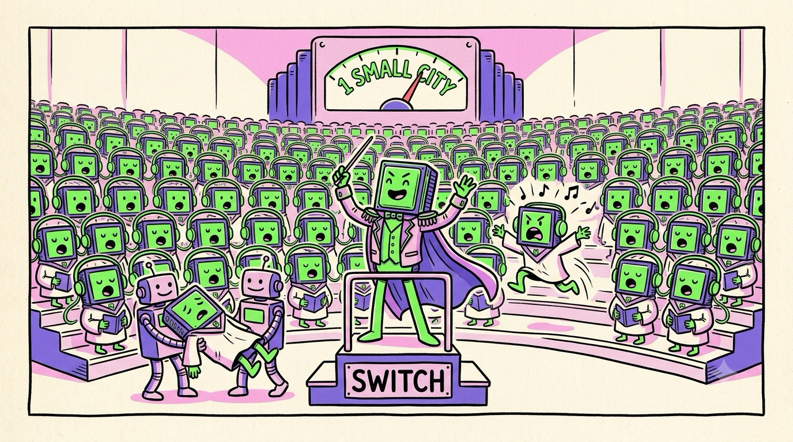

Chapter 09 · Scaling Out
When One GPU Isn't Enough: Clusters & AI Factories
Everything so far happened inside one chip. But a frontier LLM doesn't fit on one chip — the weights alone can exceed any single GPU's memory, and the training math would take one GPU centuries. So the industry's answer to "the GPU is a parallel computer" was, naturally: make a parallel computer out of parallel computers. Welcome to the world where the unit of computing is not a chip or a server, but a building.
The wiring problem
Splitting a neural network across GPUs means GPUs must constantly swap partial results — activations flowing forward, gradients flowing back. Regular networking (even fast Ethernet at ~10–50 GB/s) is a soda straw next to HBM's terabytes per second; naive scaling would leave every GPU idle, waiting for the network. The fix comes in tiers, each about an order of magnitude slower than the last:
| Link | Connects | Ballpark speed |
|---|---|---|
| HBM (on-package) | a GPU to its own memory | 3–8 TB/s |
| NVLink 5 | GPUs inside a server/rack | 1.8 TB/s per GPU |
| InfiniBand / RoCE | servers across the datacenter | ~50–100 GB/s per NIC |
| PCIe 5 | GPU ↔ its host CPU | ~64 GB/s |
NVLink is the star: a dedicated GPU-to-GPU connection that skips the CPU and PCIe entirely. Through NVSwitch chips, every GPU in a rack talks to every other at full speed, and one GPU can even read another's memory directly. NVIDIA's flagship rack, the GB200 NVL72, wires 72 Blackwell GPUs (plus 36 Grace CPUs) into a single NVLink domain — one giant 72-headed GPU with tens of terabytes of pooled fast memory, drinking ~120 kW. That rack, not the chip, is the unit AI labs now shop for.
Slicing the model: the three parallelisms
Given N GPUs, how do you divide an LLM among them? Three cuts, usually combined:
- Data parallel — every GPU holds a full copy of the model, each trains on different examples, and they average their gradients each step. Simple, scales wide; but the sync ("all-reduce") crosses the network every step, and each GPU must fit the whole model.
- Tensor parallel — slice the matrices themselves: each GPU holds a stripe of every weight matrix and computes its slice of every multiply. Needs constant chatter mid-layer → only viable inside the NVLink domain. This is how models too big for one GPU get served at all.
- Pipeline parallel — deal out the layers: GPU 1 takes layers 1–20, GPU 2 takes 21–40… Activations flow down the line like an assembly line, with micro-batches keeping every station busy.
Amdahl's law never sleeps. Perfect 2× scaling from 2× GPUs is a fantasy; every cut adds communication overhead, and one slow GPU (or one dropped network packet) can stall ten thousand others at a synchronization barrier. At frontier scale, hardware failures are routine — a months-long training run is engineered around GPUs dying mid-job, with constant checkpointing and hot spares. Distributed training is as much systems engineering as ML.
The AI factory
Zoom all the way out. A frontier training cluster in 2025–26 is 100,000+ GPUs: thousands of NVL-class racks, an InfiniBand/Ethernet fabric with more internal bandwidth than the public internet's backbone, and a power draw of 100+ megawatts — a small city. xAI's "Colossus" famously stood up 100,000 H100s in 122 days; hyperscalers now announce gigawatt-scale campuses. NVIDIA's term for these — "AI factories" — is honest: raw data goes in, a multi-terabyte file of weights comes out, and the electricity bill is the cost of goods.

A funny zine-style cartoon, hand-drawn ink with flat colors (electric green, violet, pink on cream paper): a vast concert hall where thousands of identical little GPU chip characters in choir robes sing in perfect harmony on risers stretching to the horizon, connected to each other by glowing green cables like shared headphone wires labeled "NVLINK". A dramatic conductor robot labeled "SWITCH" waves a baton on the podium. In the front row, one GPU has fainted and is being carried off by two stagehands while an understudy GPU leaps in mid-note (the failure joke). A power meter on the wall reads comically "1 SMALL CITY". Exaggerated, playful, no other small text. Target size ~1280×720px, 16:9 landscape; composed for a small on-page figure, subject centred with safe margins — it is letterboxed into a 16:9 box, so keep nothing important near the edges.
Generate this with your image agent, then drop the file here.
Scaling is fractal — it's the same story at every altitude. Inside an SM: many cores, hide the latency. Inside a chip: many SMs, share the L2. Inside a rack: many chips, NVLink. Inside a building: many racks, InfiniBand. At each level you get more parallel workers and pay a slower connection between them — so at each level, winning means the same thing it meant in Chapter 5: keep the work local, and overlap communication with compute.
That's the whole machine, from one warp to one hundred thousand GPUs. Last question, and it's the practical one: what does all this mean for you, a student with a laptop and curiosity? Good news — this is the best time in history to get your hands on GPU power. Final chapter.
Sources NVIDIA, GB200 NVL72 & NVLink product pages (nvidia.com) · Civo, "Comparing NVIDIA's B200 and H100" (civo.com) · CUDO Compute, "NVIDIA's Blackwell architecture" (cudocompute.com) · public reporting on xAI Colossus (2024–25)